A look at Testin, a test case management plugin that keeps both in one place.
If you write test cases and also automate them, you work in two places at once.
The test cases are in a spreadsheet, or in a test management tool that lives in a browser tab. The automation is in IntelliJ IDEA: Java, TestNG, under Git, and reviewed like the rest of the code.
Nothing connects the two. A test case gets reworded in the spreadsheet and the method keeps the old name. A test case is deleted and the method stays in the class for another year. A new case is written and nobody notices there is no method for it. When somebody asks "is this covered?", the honest answer is that you would have to read both lists and compare them by hand.
There is also the day of it. A test management tool lives in a browser tab, and a browser tab is a mouse. Recording a verdict means opening the run, finding the case, clicking a status, waiting for the page and scrolling back to where you were; saying what actually happened means another dialog and another wait. Fifty cases is a few hundred clicks, and none of it gets faster the tenth time you do it, because there is nothing to learn by hand. Meanwhile the window you left to get there is driven almost entirely by keys.
The drift is not a discipline problem, and neither is the clicking. Both are what happens when the two artifacts share no identity, no history, no screen and no keyboard.
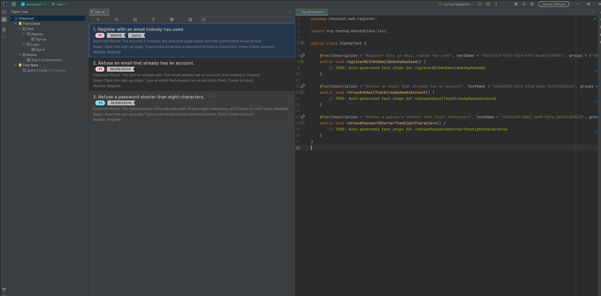
Testin is a JetBrains IDE plugin that puts test case management inside the IDE, next to the automation it drives.
It adds a tool window with a tree: test projects, test sets, test runs. You write test cases in an editor tab. Testin
writes and maintains a TestNG class and one @Test method for every case, tied to it by the case's own
identity rather than by its name. You execute a run from the tree, the editor or the gutter, recording a verdict per
case, and generate a report at the end.
Everything it owns is plain files on disk, under a folder you choose. There is no server, no account, and no telemetry.
The walkthrough below uses an invented demo: a test project called Checkout, holding a Web
and a Mobile package. Web holds Login and Register, each with a
test set of its own - Sign in and Sign up - and Mobile has one more. The run
below, Sprint 2 Cycle 1, covers seven cases from them.
Testin keeps its data out of your code repository on purpose: a test case edit should not show up as a diff in the automation project. So the first thing you set, in Settings → Tools → Testin, is the Testin folder — any empty folder, which becomes the root every open project reads — and your tester name, which is written into every case and every verdict you record.
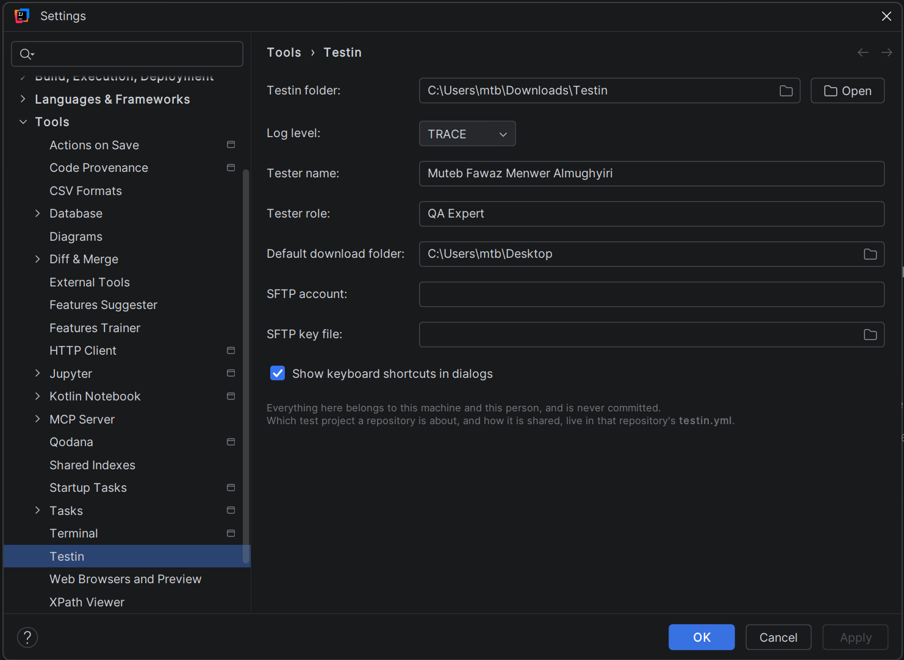
Press New Test Project at the top of the panel and name it. It gets two fixed folders: Test
Cases and Test Runs. Select Test Cases, press Ctrl+M and pick *Test
Set* — usually one feature.
A package holds sets, so Web holds Login and Register; make one the same way
and pick *Test Set Package*. Open a set and press Ctrl+M once more to write a case. A case has a
description, an expected result, steps, test data, pre-conditions, a module, a priority and groups. You get a card
list or a grid view, paging, filtering, search and bulk edits.
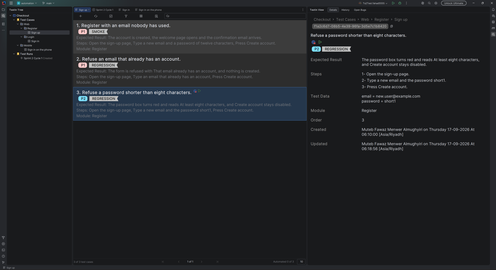
On a card, F2 edits a field and single letters jump straight into one: D for the
description, E for the expected result, S for steps.
Right-click the test set and choose Generate Code. Testin writes a TestNG class into the project's test source folder, with one method per case:
@Test(description = "Register with an email nobody has used",
testName = "d2571ec8-9a3f-4b16-bf04-8c6e17a5d932",
groups = {"SMOKE", "Sanity"},
priority = 1)
public void registerWithAnEmailNobodyHasUsed() {
// TODO: Auto-generated test steps for registerWithAnEmailNobodyHasUsed
}
testName carries the test case's identity. It is how Testin finds the method again, which is why
renaming a case renames the method instead of orphaning it. priority is the case's position in its test
set, counting from one — TestNG runs methods in that order, so the order you drag cards into is the order the suite
executes in. The body is a single comment, and it stays yours: Testin writes the annotation and the declaration and
never touches what is inside.
Remove a case and the method goes with it. The class stays.
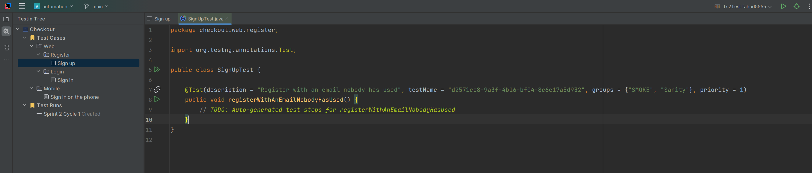
Shift+F5 jumps from a card to its method, and the gutter mark beside the method leads back to the case.
A test run is one round of testing over the sets you pick. Create it under Test Runs and open it. Each
case is a card, and three keys record what happened: P for passed, F for failed,
B for blocked. The cursor advances on its own, so a clean run is P P P without the mouse.
F is the one verdict that asks first. A form opens for the actual result, a bug severity, a bug
priority, and an error box you can paste a screenshot into — the screenshot is kept as a PNG file beside the run,
not as text inside it.
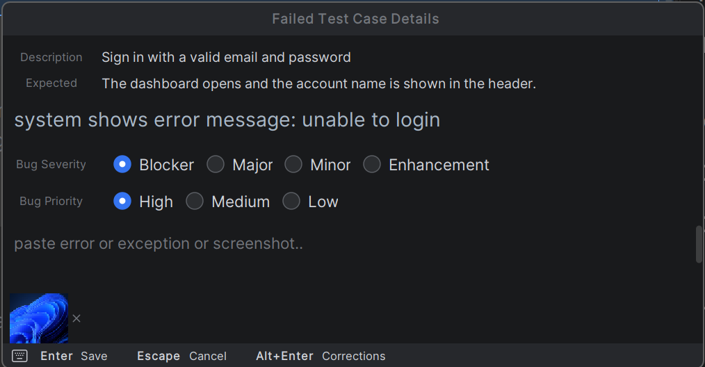
If you are testing an application rather than running code, light mode is a small always-on-top window showing one case at a time, with the same three keys, so the application under test can have the whole screen.
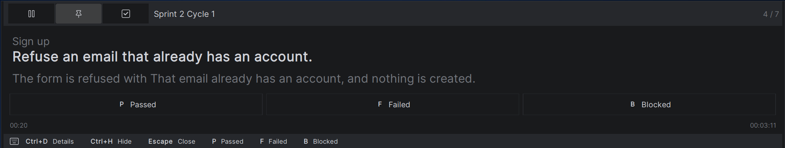
Cases with automation are not judged by hand: F5 on a selection runs the generated methods and records
the verdict TestNG returned.
Open the failed case's details on the right. A Bug Issue row offers Report Bug.
Testin writes the issue from what the run already knows — the description becomes the title; severity, priority,
platform, actual result, expected result, numbered steps, test data, the folded exception, the screenshots, who
executed it and when, and a link to the test case's own file. Anything it cannot get reads n\a rather
than being invented.
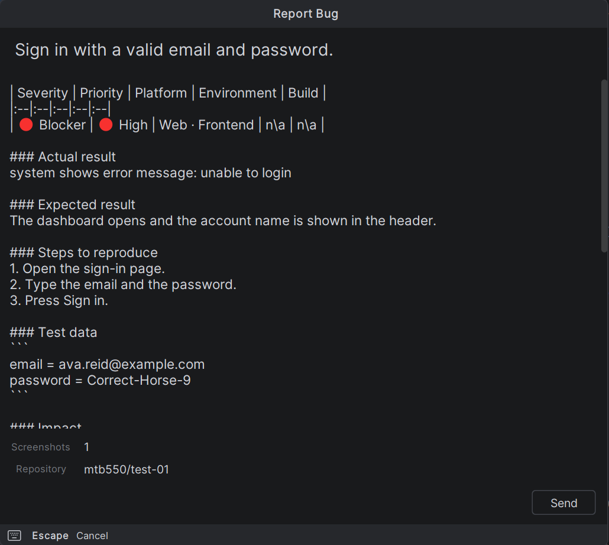
You read it, edit it if you want, and press Send. It is filed through the GitHub CLI,
gh, into the repository named in testin.yml. Testin stores no password and no token;
gh holds the sign-in. If anything is missing — no repository configured, gh not installed,
not signed in, title too long — Send is disabled and hovering over it says which.
Afterwards the row shows the issue as owner/repo#123 and links to it. So does the report.
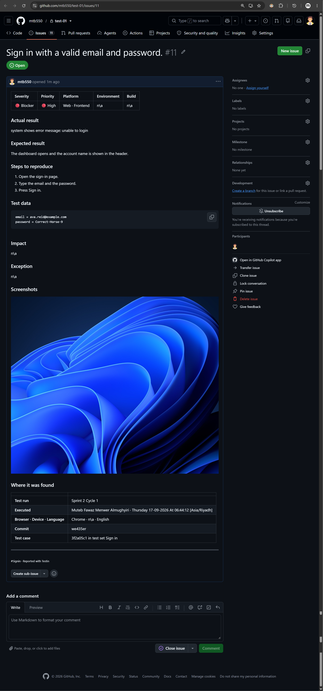
Select the run and press Ctrl+P. Four formats: PDF to attach to a ticket, Word to edit first, HTML for a
browser, Excel to filter.
The document holds the run's overview, an execution summary with the totals and the pass rate, whatever result analysis you wrote, and one table per verdict. The failed table also carries the bug severity and priority, the actual result, and the issue the failure was reported as.
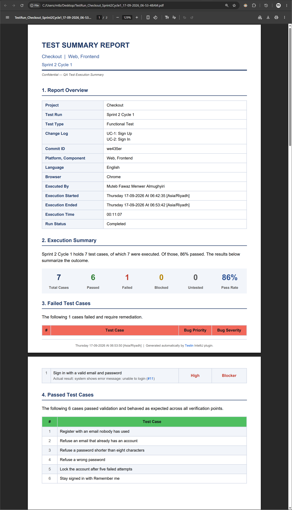
A test project is a folder. A folder is a test set because it contains a file called .ts, and a test run
because it contains .tr — markers whose whole name is the extension. Inside a test set, every test case
is one file named by its id, 4fd2a19b-….tc. A run keeps its own facts in its .tr - how it
was configured, when it was executed, what you wrote about the verdicts - and one file per result beside it, <test
case id>.ri: status, duration, who executed it and when, the actual result, the exception, the
screenshot names and the bug issue link. One verdict is one small file, which is why two people running the same
cycle never write over each other.
The files are UTF-8 and pretty-printed, and the values are byte-identical to what you typed. Testin capitalizes a description and closes it with a period when it draws it, and stores neither. That is the part that makes Git useful here: a diff shows the field you changed and nothing else.
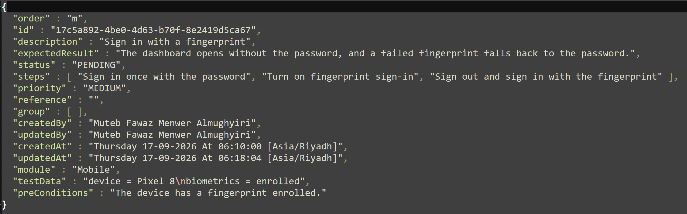
One file does live in the code repository, and it is the only one committed there: testin.yml, which
names the test project this repository drives and, optionally, the repository bugs are filed in. No machine name, no
person and no password is in it.
Because the test data is its own Git repository, you can put it under review: commit, push, pull and resolve conflicts from inside the panel, with a diff of what changed in each case.
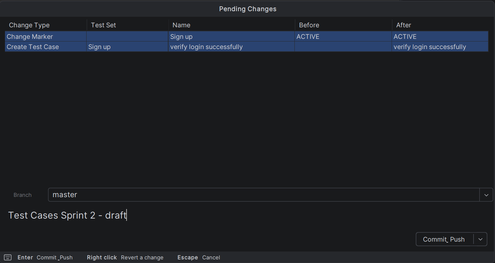
On privacy, the short version: test cases, steps and JSON files stay on your disk or in your own version control. The
plugin embeds no tracking, analytics or telemetry, and does not upload source, test data, environment variables or
credentials anywhere. The one time data leaves your machine is when you press Send on a bug report,
and it goes to your repository through your own gh sign-in.
It is for a QA engineer who writes test cases and automates them in a JetBrains IDE, and for the mixed teams where the same person does both. Manual testing is the first half of the loop, not an afterthought: you can run a whole cycle in light mode without writing a line of Java.
It is not a hosted test management platform. There is no web UI and no accounts: everything it does happens in the IDE, on your own disk. If your organization needs auditors and managers in a browser, Testin is the wrong shape. If your test cases should be reviewed in a pull request like the code they test, it is the right one.
It is alpha, and it says so in the version number.
Everything above is reachable from the keyboard, which is the other half of the point: a cycle is judged with your hands where they already are.
P F B — passed, failed, blocked, on a run's cards and in light mode. The
cursor moves to the next case on its own.
F2 — change one field of the selected case. D, E and S open
the description, the expected result and the steps directly.
Ctrl+M — a new test set, test run or test case, depending on what is selected.F5 — run the selected cases, or stop them. Shift+F5 jumps to the generated method, and
the gutter mark leads back.
Ctrl+P — generate the report on the selected run.Ctrl+F — the editor's search box. Ctrl+Alt+F finds any case, set or run in the test
project from anywhere in the IDE.
Ctrl+Left and Ctrl+Right — the previous and next page of cases; with
Shift, the first and the last.
Ctrl+Z and Ctrl+Y — undo and redo. The tree and each editor keep their own history, so
taking back a bulk edit does not take back a rename.
Shift+F6 renames the selected node, Delete removes what is selected, and
Enter opens it.
Ctrl and the wheel — text size, in the editor and in the panel alike.Every one of them is an IDE action, so they appear in Find Action and in Settings → Keymap, and any of them can be rebound. A menu then prints the key you chose rather than the one Testin shipped.
From the IDE: Settings → Plugins → Marketplace, search for *Testin*, install, restart. Or install it from the Marketplace listing.
You need IntelliJ IDEA 2026.1 or later. The Java, TestNG and Git integrations are optional: without them the plugin still loads and disables the features that need them rather than failing.
Then set the Testin folder in Settings → Tools → Testin and create your first test project.